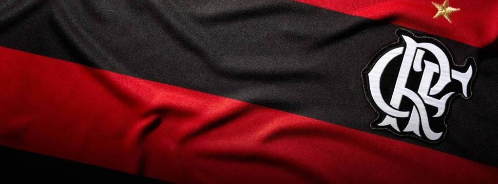

Confira nesta matéria todos os detalhes do Flamengo e curiosidades que o
levaram a conquistar muitos corações,
do Rio de Janeiro para o Mundo!

Qual é a história do Flamengo?
A história do Flamengo teve início em novembro de 1895.
Nesse período,
o time contava com um clube de remo popular no Rio de Janeiro: o Clube das Regatas do Flamengo.
Em 1912, o futebol começou a crescer como esporte de destaque carioca.
Foi o momento certo para o clube transcender as águas do remo e ir para os campos.
Com essa trajetória do mar para a terra, o Rubro-negro começou a crescer e a ganhar mais adeptos.
Uma peculiaridade é que o clube teve que passar por um desafio para continuar atuando nas águas.
Teve um dos seus barcos naufragado, recuperado e depois roubado, o Pherusa.
Isso poderia ser um desafio grande demais para alguns, mas não para o Flamengo,
que conseguiu um novo barco no dia 15 de novembro de 1895, o Scyra,
dando início oficial ao grupo de regatas. Como o Flamengo entrou no futebol?
O grupo de regatas já tinha destaque no Rio de Janeiro,
com o futebol ganhando as quadras no início do século XX.
O Rubro-negro decidiu fazer a inclusão da terra, além do mar que já era dominado.
Esse passo tornou o grupo ainda mais popular. Os torcedores, que amavam vê-lo no remo,
começaram a incentivá-lo também nos gramados.
Isso fez com que o time rubro-negro se tornasse o mais popular do Rio de Janeiro.
Quais foram as primeiras conquistas?
Sendo dirigido por Alberto Borgerth em 1911, o Flamengo já começou sua história nos campos
tendo destaque. Em 1912, dia 3 de maio, na primeira partida, o time derrotou o Mangueira.
Para quem acha que foi por uma pequena diferença, já adiantamos que não! Foram, pelo menos,
15 gols feitos pelo Mengão. Não podemos esquecer de destacar os responsáveis da época pelo
sucesso, os jogadores eram: Galo, Arnaldo, Baena, Baiano, Borgerth, Coriol, Amarante,
Píndaro, Gustavo, Nery e Gilberto.
E as conquistas não pararam por aí. Em 1926, já era o time com mais vitórias, ganhando
campeonatos importantes anos antes, como o Carioca, os Troféus: Torre Sport Club PE,
Agência Hudson, Jornal do Comércio de Pernambuco, Sérgio de Loreto e campeonato carioca
de 2 ° quadro.
Em 1933, teve sua primeira partida internacional, já vencendo o River e deixando de ser um time
amador.
Como iniciou no futebol profissional?
A partir do início no futebol profissional, o Flamengo começou a crescer. Em 1934, tinha
José Bastos Padilhas como presidente. O trabalho foi para trazer nomes importantes para o time,
como Leônidas da Silva, que foi o artilheiro de destaque na Copa do Mundo de 1938.
O Mengão teve seu primeiro título fora do Brasil em 1949, na Guatemala.
Muitos craques passaram pelo time. Como na década de 70, contando com Leandro, Júnior, Zico e
Andrade, que conquistaram para o time a Taça Guanabara e outras vitórias importantes até
hoje para o Flamengo.
Na sequência, o jogador Zico teve ainda mais destaque, sendo conhecido como Rei da Gávea e 74.
Junto ao jogador Júlio César, trouxe diversas vitórias, como o primeiro título no Campeonato
Brasileiro e, mais tarde, o Mundial contra o Liverpool, dando a Zico reconhecimento de melhor
jogador da temporada. Foi uma época marcante para o time.
Com diversas conquistas e depois de enfrentar algumas instabilidades, no centenário do Flamengo,
o presidente era o Kléber Leite, que levou ao time ninguém mais ninguém menos que o melhor jogador
da época: Romário. O jogador foi artilheiro carioca e Sávio, destaque da Copa Ouro Sul.
Quais outros nomes importantes passaram pelo time?
Outros nomes de destaque passaram pelo Flamengo ao longo dos anos, como: Vagner Love, Adriano
Imperador e Ronaldinho Gaúcho. Como não lembrar deles usando o uniforme rubro-negro?
E não podemos deixar de falar do famoso: Gabriel Barbosa, mais conhecido como Gabigol,
que salvou o Mengão no Campeonato da Libertadores de 2019, virando o jogo nos últimos minutos
do segundo tempo. Para justificar o apelido, em quantidades de gols, o Gabigol fica atrás
apenas do lendário Zico.
Quais as curiosidades sobre o time?
O Flamengo também traz momentos peculiares em sua caminhada, com algumas curiosidades sobre
o time e as mudanças que teve ao longo dos anos. Confira algumas delas e veja se já sabia de
todas.
O flamengo não tinha a cor vermelho e preto
O clube de remo não vestia o clássico vermelho e preto do rubro-negro atual. E, sim, regatas
listradas amarelas e verdes. Porém, algumas questões dificultavam a utilização dessas cores
em terras cariocas, como: a ação do sol desbotava o uniforme, o tecido era mais difícil de
ser encontrado nessas cores. Logo, decidiram trocar por cores mais fortes e que marcassem a
mesma presença que o time marca hoje em dia, o preto e vermelho! E, vamos combinar, ficou
muito mais bonito!
O mascote nem sempre foi o urubu
É até difícil adivinhar qual era o mascote se não o urubu. Mas adiantamos: era um personagem e
tinha muita ligação com o remo. Sem mais mistérios, era o personagem marinheiro forte: Popeye.
Em 1969, foi mudado para o urubu, sendo uma representatividade dos torcedores negros e pessoas
de baixa renda.
O hino oficial
Quando pensamos no Mengão, logo vem à cabeça o som: “Uma vez Flamengo, sempre Flamengo,
Flamengo sempre eu hei de ser”, cantado por mais de 40 milhões de torcedores.
Mas esse não é o hino oficial. Chocante, não é mesmo?
O oficial é “Flamengo, tua glória é lutar”, feito em 32 por Paulo Magalhães, ex-goleiro.
O nosso conhecido e amado hino foi criado em 45 e ganhou os corações rubro-negros.
Fonte - https://blog.usereserva.com/lifestyle/flamengo-historia-curiosidades/